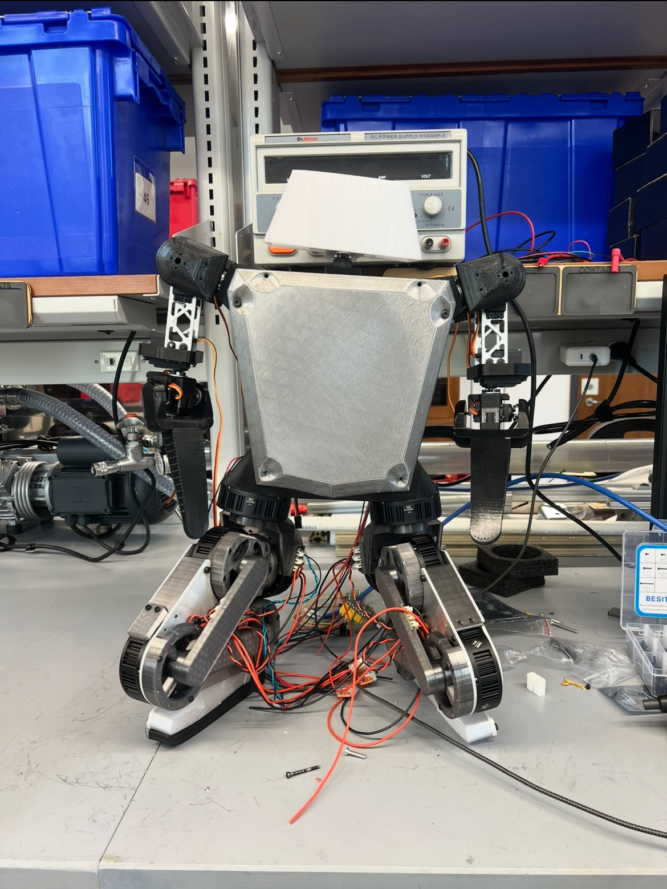

Humanoid Robot
Date: 2025 · Role: Everything Engineer


Overview
Architected and built a custom 7 kg bipedal humanoid robot from the ground up, drawing inspiration from Disney’s Versatile Motion Priors (VMP) research. Working alongside a former Amazon colleague, I led the development of the lower-body mechanics, simulation environemnt, training policy, software, overall electronics architecture, and torso design.
For the hardware, I designed a 20 DoF system with 5 DoF per leg, 4 DoF per arm, and 2 DoF for the head. The lower body is powered by GIM6010-8 BLDC motors with integrated 9:1 gear reductions, controlled through ODrive controllers. The actuators are mounted directly at the joints to mirror the Disney bipedal architecture. The chassis combines machined aluminum plates, PETG, and TPU, and all motor controllers communicate with the main compute unit over a CAN bus network.
On the software and controls side, the robot is fully assembled in hardware and has been replicated in NVIDIA Isaac Sim as a digital twin. I trained a reinforcement learning policy for standing stabilization in simulation and am currently working through sim-to-real transfer. I have tuned the PID of all the leg motors, and my next steps are to complete the ROS 2 and Python control stack, and deploy the trained model to the onboard Raspberry Pi.